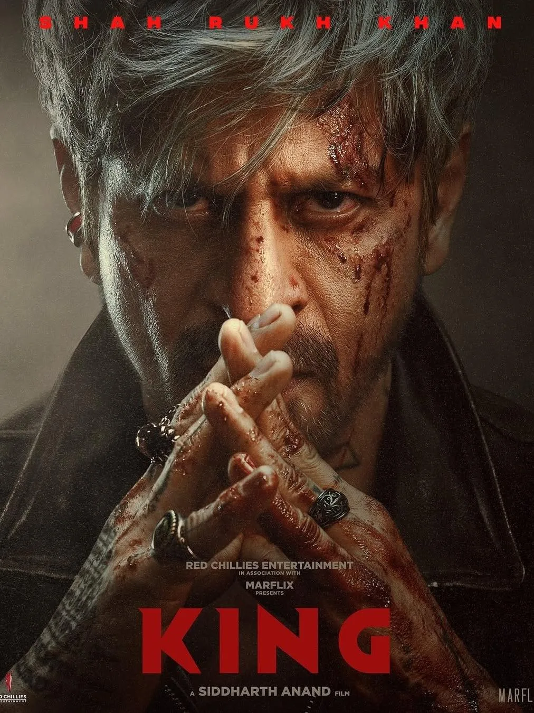
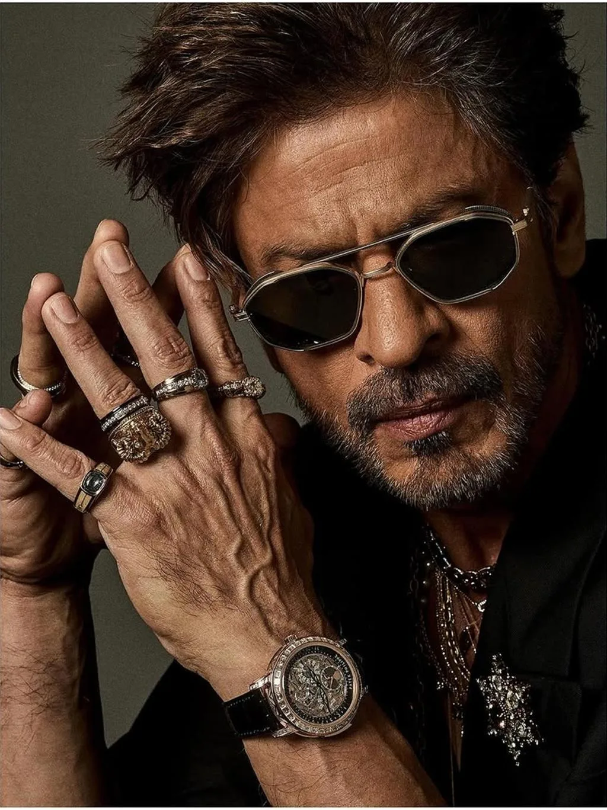

The Final Thesis · section 40 of 92
The revised chapter: ASOKA TO BOODA
Be Da Boo-Da. This time, the King is going ALL IN.



5
Forget renunciation.
Forget walking away from the throne.
Forget the emperor who has seen the horrors of conquest and decided to surrender his empire.
This is ASOKA TO BOODA, 2026 edition.
The King has seen the game. He knows the game. He has already demonstrated that he can win the game.
And now?
He is doubling down.
Tripling down.
Putting the kingdom, the crown, the casino and the entire deck on the table.
The old ASOKA built an empire. The BOODA version has apparently discovered that there are more tables to play at.
Cinema. Advertising. Global sports. Technology. AI. Intellectual property. And an audience that spans continents.
The joke is dark. The implications are very real.
Because look at the sequence.
First, the films.
Pathaan. Jawan. Dunki.
The cinematic comeback was not a single lucky hand. Three major releases in one year restored Shah Rukh Khan's box-office presence on an extraordinary scale.
Then the commercial machinery expanded around him.
Brands. Endorsements. New commercial partnerships. Public estimates placing him among the wealthiest figures in Indian entertainment.
Then cricket.
The Knight Riders brand, which began as an IPL franchise, expanded internationally. By 2026, the organisation's Los Angeles-area cricket ground represented a move beyond the familiar business of owning a team and into physical sports infrastructure.

India Today
+1
Then technology.
FLAM announced its $40 million Series B funding round in September 2026, with Shah Rukh Khan participating as an investor. The company's stated focus includes interactive AI content and applications in entertainment, marketing and fan engagement.
flamapp.ai
+1
And then comes KING.
A film whose title is almost too perfectly positioned for this moment.
The question is no longer whether the King can return to the box office.
The question is whether he is assembling a much wider entertainment ecosystem in which cinema is only one of the cards.
THE ROYAL FLUSH
Five cards. One King. An unanswered question.
01
KING — Cinema
The next major theatrical chapter, scheduled for December 2026.
02
Brands — Commercial power
A continuing endorsement and advertising presence that extends the superstar's reach beyond film releases.
03
Hurun — Wealth
Public net-worth estimates that illustrate the scale of his commercial empire, while remaining estimates rather than audited financial statements.
04
Knight Riders — Global infrastructure
A sports and entertainment brand expanding into international franchises and physical venues.
05
FLAM — Interactive AI
A documented investment connection to a company working on interactive AI content, opening questions about the future of fan participation and entertainment.
Individually, these are different business activities.
Together, they create a compelling question about the scale and direction of the next chapter.
Is KING simply the next film in an extraordinary cinematic career?
Or could it become the centre of a much broader convergence of film, fandom, technology, brands and global entertainment?
There is no public confirmation that these ventures are components of a single KING strategy. That is precisely what makes the ending suspenseful: the evidence gives us the cards, but not the hand.
And now the final question becomes sharper:
What if ASOKA TO BOODA is not the story of a King who has given up his kingdom, but of a King who has decided that the old kingdom was only the beginning?
He has played the game.
He has survived ZERO.
He has returned through Pathaan, Jawan and Dunki.
He has expanded beyond cinema.
And now he is called KING.
Is he cooking something?
Is this a Royal Flush?
Or are we still looking at only the first five cards?
What's Mr. Khan up to? What is brewing behind the silence? And what storm is about to break when KING finally arrives?
That is where ASOKA TO BOODA belongs: after the resurrection, immediately before the final suspense—not as renunciation, but as the ultimate doubling down.
Now, with statistics, create an official FIRST DRAFT. I want linkedin to light up for request to get a copy of this study. Put in everything you got.